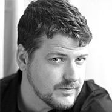

About the Event
Each Featured Artist has an opportunity to speak at the conference to share his or her vision, perspective, and techniques with conference attendees. It is truly an honor to be a CAC Featured Artist and many past students artists who were featured at CAC have gone on to brilliant careers in art.
-
Eran Hammer
 Eran is a high-profile
member of the global Node.js community. He is best known internationally for leading the
software development team at Walmart that transformed the US retail giant’s mobile
e-commerce platform to Node.js with two extremely successful and uneventful Black Fridays,
the busiest shopping day of the year.
Eran is a high-profile
member of the global Node.js community. He is best known internationally for leading the
software development team at Walmart that transformed the US retail giant’s mobile
e-commerce platform to Node.js with two extremely successful and uneventful Black Fridays,
the busiest shopping day of the year. -
Ryan Dhal
Ryan Dahl is an engineer at Joyent, where he is continues to lead the open source project he created, Node.js, the server-side JavaScript runtime environment. He has also authored other projects including libuv, http-parser, and the Ebb web server. Ryan is interested in building scalable server systems and believes there is still an order of magnitude of optimizations for concurrency and throughput to be given to web developers.
-
Subbu Allamaraju
 Subbu is a coder at eBay currently building ql.io (see http://ql.io), a Node.js based
platform. The goal of this platform is to make consuming APIs cheaper, faster, more
performant and scalable. Prior to eBay, Subbu was at Yahoo! and BEA Systems. Due to his
RESTful Web Services Cookbook, he is often mistaken as a REST Guru, but he is not.
Subbu is a coder at eBay currently building ql.io (see http://ql.io), a Node.js based
platform. The goal of this platform is to make consuming APIs cheaper, faster, more
performant and scalable. Prior to eBay, Subbu was at Yahoo! and BEA Systems. Due to his
RESTful Web Services Cookbook, he is often mistaken as a REST Guru, but he is not. -
Chris Allen
 Chris is an international speaker, software inventor and entrepreneur based in Boston. He co-founded the open source server Red5, where he and his team of volunteers reverse engineered Flash’s RTMP protocol. He started the company Infrared5, a technology services company, in 2007 where he served as its President and CEO until 2011. He now serves as CEO of Brass Monkey, a company that turns smartphones into game controllers for a browser based video game console.
-
Jonathon Anthony
 Jonathon grew up in Wyoming, California and Colorado. He spent his 20s in Chicago, where he
met his wife, Angeline Gragasin. They are currently living and raising an army in Los
Angeles, city of many intersecting highways. Together, and with myriad collaborators, they
do NATIONAL HEADQUARTERS dot org.
Jonathon grew up in Wyoming, California and Colorado. He spent his 20s in Chicago, where he
met his wife, Angeline Gragasin. They are currently living and raising an army in Los
Angeles, city of many intersecting highways. Together, and with myriad collaborators, they
do NATIONAL HEADQUARTERS dot org.
-
Eric Braun
Eric oversees business development for Node.js and similar projects at Joyent, and is currently focused on Node for the enterprise. More specifically, Eric is gaining an insider’s perspective into the vast array of Node use cases and working with enterprises on production applications and field readiness. Before Joyent, Eric was responsible for establishing enterprise payments at PayPal and was Director of Product at Commerceflow amongst other entrepreneurial pursuits.
-
Ilya Grigorik
 Ilya Grigorik is a developer, an open-source and Ruby evangelist, a data-geek, and a
proverbial early adopter of all things digital. Now living in the San Francisco Bay Area,
Ilya is working on Social Analytics @ Google. Prior to joining the Google Analytics team,
Ilya was founder and CTO of PostRank, a social web analytics company which was acquired by
Google in June 2011.
Ilya Grigorik is a developer, an open-source and Ruby evangelist, a data-geek, and a
proverbial early adopter of all things digital. Now living in the San Francisco Bay Area,
Ilya is working on Social Analytics @ Google. Prior to joining the Google Analytics team,
Ilya was founder and CTO of PostRank, a social web analytics company which was acquired by
Google in June 2011.
-
Riley Rudolph Rewington
 A first-year
student at the Roux Academy of Art, Media, and Design, Riley is already changing the face of
modern art at the university. Riley’s exquisite abstract pieces have no intention of ever
being understood, but instead beg the viewer to dream, create, pretend, and envision with
their mind’s eye. Riley will be speaking on the “Art of Abstract” during Thursday’s
schedule.
A first-year
student at the Roux Academy of Art, Media, and Design, Riley is already changing the face of
modern art at the university. Riley’s exquisite abstract pieces have no intention of ever
being understood, but instead beg the viewer to dream, create, pretend, and envision with
their mind’s eye. Riley will be speaking on the “Art of Abstract” during Thursday’s
schedule. -
Eric Gunderson
 Eric coordinates product development for MapBox, the platform that let anyone make fast and
beautiful maps and share them anywhere. MapBox’s open source design studio, TileMill, is
powered by Node.js. Eric is passionate about open data and building open source data
visualization tools that focus on speed and hot design. He’s also the co-founder of
Development Seed, a creative data visualization team based in Washington, DC.
Eric coordinates product development for MapBox, the platform that let anyone make fast and
beautiful maps and share them anywhere. MapBox’s open source design studio, TileMill, is
powered by Node.js. Eric is passionate about open data and building open source data
visualization tools that focus on speed and hot design. He’s also the co-founder of
Development Seed, a creative data visualization team based in Washington, DC.